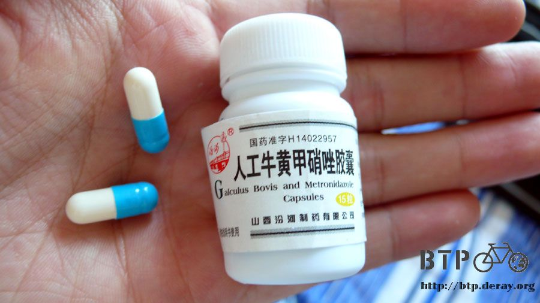
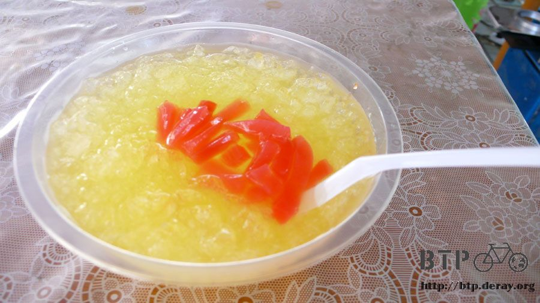
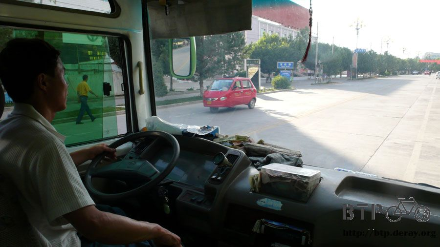
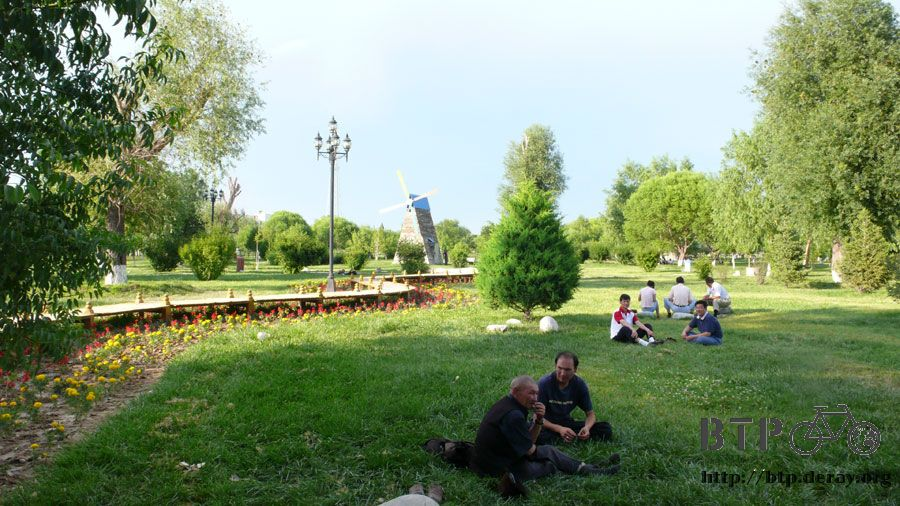
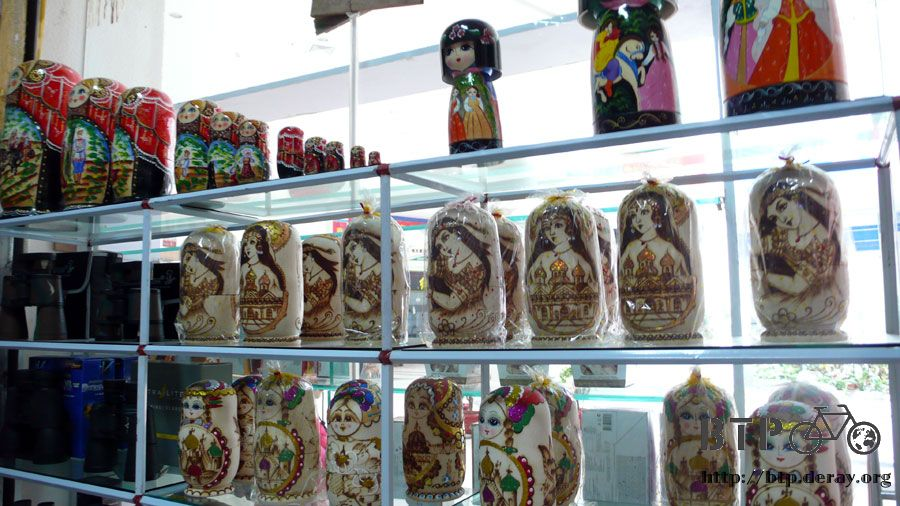
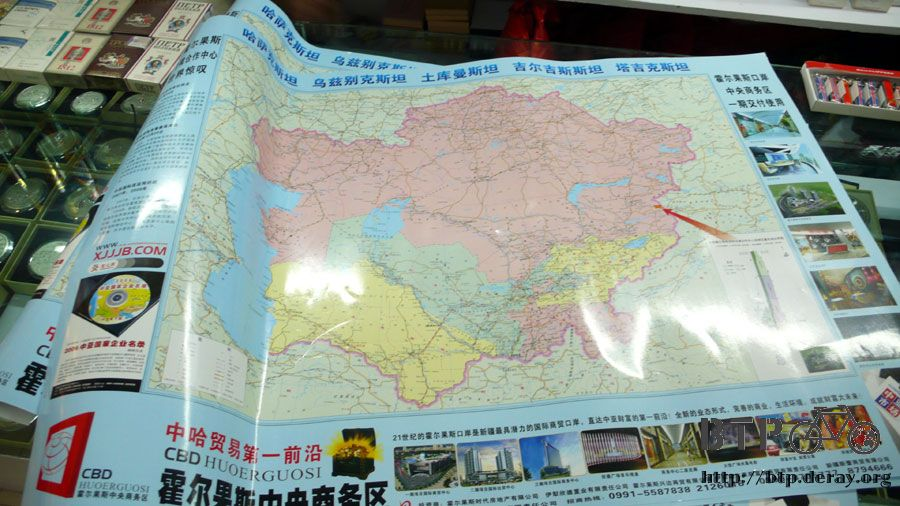
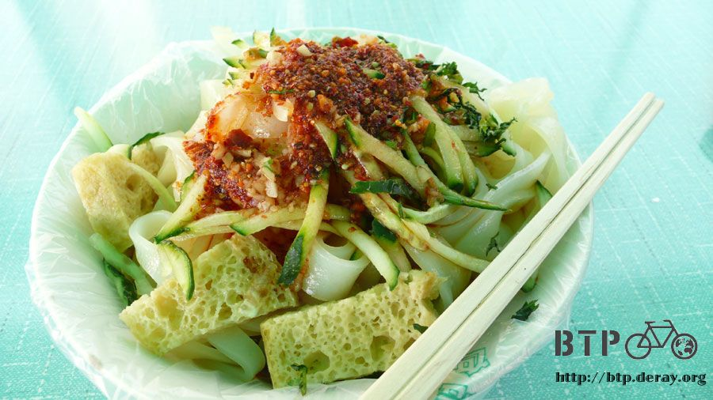
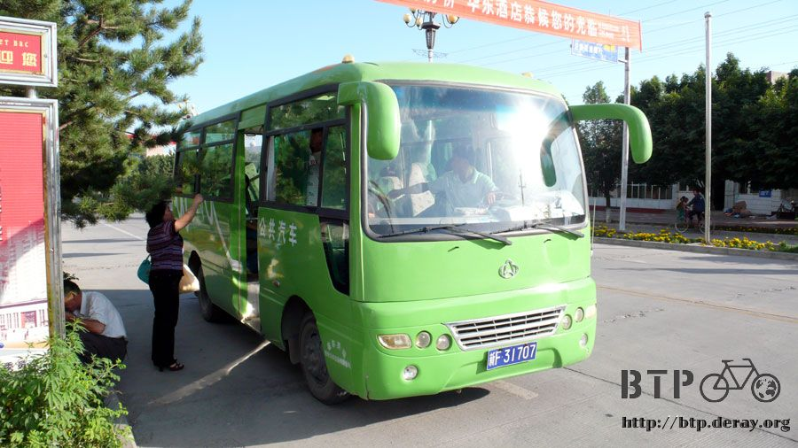
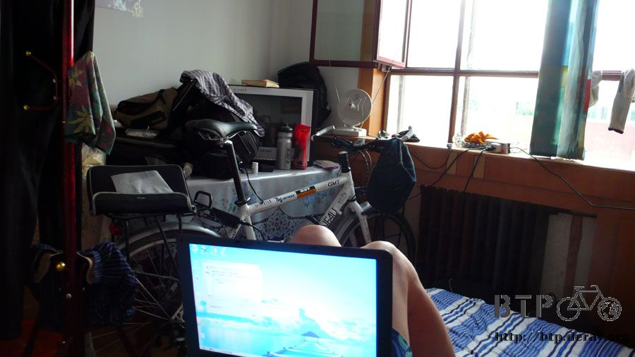

邊境小鎮的溫度
在六十二團睡醒的時候，感覺就有點不太妙，不是感冒頭痛，而是牙齒痛。
正確來說，是右後方最裡面的牙齒那邊腫了兩個包出來，牙齒不會痛，可是那兩個包跟嘴巴都很痛。
牙齒無法咬合，不然就會咬到腫起來的包，這代表著一件很殘酷的事情，我無法吃東西了。
待在這裡單純是為了休息養足體力，所以沒安排什麼特定的行程，只要找時間去霍爾果斯買地圖跟換錢就好了。
早上太陽很大的時候，我都是待在網吧裡面渡過，肚子餓又無法吃東西，就買了一根麵包狀的麻花捲，配著果汁吞嚥下去。
本來覺得既然不是牙齒痛，那就不要緊，過陣子應該就會消腫吧？
今天收到Fleck和Jacquin寄來的Email，聽到他們的消息真是開心，那天擁抱分別之後，他們往我說的二十公里外的加油站騎去。
當天晚上就在加油站的地板上搭帳篷露營，吃加油站的食物，一共喝了兩公升的百事可樂。
這兩個可愛的爸爸跟媽媽，我不會因為他們已經六十多歲而稱呼他們老人家，因為他們一點也不老，不論是心還是活力。
祝福他們能夠平安順利的騎到西藏去，人生不論什麼時候開始冒險，只要還有夢想去實現，那就永遠不嫌晚。
過了中午之後，嘴巴腫得更厲害，講話已經變成含滷蛋了，沒人聽得懂我在講什麼。
想去看醫生，但是這裡沒有醫院，旅館的太太說可以去藥局買藥，藥局就在旅館的隔壁而已。
因為無法講話溝通，就用手摀著臉頰，口齒不清的說我牙齒痛，要吃什麼藥？

沒有檢查我的情況，就拿出了三種藥給我選，止痛的、消炎的跟老闆也說不出是什麼的藥。
想了一下就買了一小瓶的消炎藥，價錢出乎意料的便宜，居然才三塊而已。
希望這個藥真的有效，可以讓腫包消下去，拜託不要讓我吃到黑心的藥品~_~
整天待在網吧太墮落了，該辦的事情辦完之後，就去鎮上逛一逛，太陽毒辣的很誇張，不只是曬得會熱而已，而是曬到會痛。


在市集裡頭轉了一下，熱到快要像巧克力一樣融化在街上，沒吃什麼正經的東西，可是現在的狀態又不知道能吃什麼，
在麵包小販那邊買了兩大塊的海綿蛋糕，吃這個就算不用咀嚼也沒關係吧。

街邊有很多賣刨冰的攤販，這陣子都在吃冰棒，好久沒有吃刨冰了，這麼炎熱的天不吃冰實在對不起自己。
點了一碗鳳梨刨冰，作法跟台灣是完全相反，台灣是用一個大盤子先刨一堆的冰，然後淋上醬料。
這邊的刨冰是用一個小碗先將醬料調好，然後再放入顆粒很粗的刨冰。

小心翼翼的吃了一口，發現對牙齒痛不構成威脅，就開心的吃了起來，手錶的溫度計已經往四十度邁進了。
吃完刨冰頂著毒辣的太陽走回旅館，如果這裡都這麼熱，那是不是表示哈薩克也是這樣的溫度在等待著我？
接下來的路線水分補給得好好規劃一下，萬一脫水了可就大大的不妙。
回旅館後將穿了三天的髒衣服洗一洗，躺在房間裡睡午覺，等太陽小一點之後再去霍爾果斯晃晃。
下午到八點，還是一樣很熱，難不成要到天黑才會涼快嗎？
穿上外套戴著帽子，繼續去給太陽曬，這時候變成西曬的太陽，都快要下山了還是那麼毒辣。
搭著公交車往霍爾果斯去，車資只要一塊錢，往返這兩個地方很方便，這麼熱的天就不騎小多跑來跑去了。

到霍爾果斯之後就問人家哪邊有在賣地圖？
下車的地點是霍爾果斯汽車站，這裡有全霍爾果斯最大的書店，看起來就跟鄉下的書店一樣，無奈的是並沒有賣地圖。
真是奇怪，明明這邊是口岸，賣隔壁國家的地圖應該是很正常的吧，怎麼會這麼難找呢？

走在昨天就到過的街道上，賣哈薩克和俄羅斯商品的商家很多，但就是沒有書店，穿過公園往邊界走去。

那邊有一棟貿易中心，裡面賣的全部都是進口的商品，法國香水、俄羅斯瓷玩偶、巧克力、刀具、望遠鏡、鏡子、披肩、地毯，什麼都有。
可是裡面一點也不民俗的感覺，這邊就是像百貨公司那樣，很多間店賣的東西都大同小異，跟烏魯木齊的國際大巴扎一樣，開價都唬爛。



一走進這裡面馬上就被招呼，『來～看看呀，你要什麼這裡都有，來看看。』
像這樣的吆喝聲此起彼落，眼睛巡視周圍一圈，找一個看起來比較和善的傢伙問一下。
『我想買地圖，哈薩克斯坦的地圖，有嗎？』
結果真的有，走遍了整個六十二團和霍爾果斯都找不到，居然在這個沒事我根本就不會踏進來的商貿中心裡找到了。
可是不是我想要買的那種紙本地圖，路線比較詳細，方便攜帶好翻閱的那種，而是一張超大張的地圖。
上面的標示都是中文，所以拿這張地圖進入哈薩克之後可以說沒什麼用處，因為那邊的道路標示牌絕對不會是中文。
可是在買不到地圖的情況下，還是決定先買這一張頂著，進入哈薩克如果能買到比較詳細的地圖再說。

『我買一張，多少錢呀？』
報價是二十五，吐了一吐舌頭，揮手轉身就要出門離開，當然肯定被留下來，只是他不是主動降價，而是問我。
『別走嘛，那多少錢你肯買，你說個數字。』
有沒有很扯？根本就沒有所謂的訂價或是合理售價這種東西，照老闆開出來的價錢買東西的人就是笨蛋，
不論你再怎麼會殺價，當你以為買得很便宜的時候，其實還是當了冤大頭。因為成本絕對遠低於你付出的金額。
問我多少錢肯買？一時還真讓我難以回答，開價二十五那要殺成多少比較合理呢。
套用殺價的一千零一招，不論開價多少都直接砍一半，零頭就無條件捨去，我比了十塊錢，結果真的就用十塊錢成交。
付錢的瞬間就覺得很後悔，剛剛如果說五塊的話不知道會怎麼樣呢？
嘴巴依然很痛，過了一整天也吃了消炎藥可是都沒有好轉，肚子餓還是得吃飯，在商貿中心的外面吃一碗涼皮。

炎熱的天吃這樣冰涼的東西還挺不錯的，可是沒辦法咀嚼吃東西真的很痛苦，整條涼皮吞進去又怕會消化不良。
只好用舌頭頂著上排的門牙來代替咀嚼的動作，將涼皮切成一小段一小段然後吞下去，明明是很好吃的食物可是吃起來一點開心的感覺都沒有。
頂著烈日搭車回到六十二團，一整天從起床到落日都是這麼熱，地圖雖不滿意但也買到了。

在旅館門口跟主人們聊天，大家都給我很多建議，關於哈薩克的一些概念，大家都說那邊亂得很，叫我一個人要小心一點。
聊了一個多小時，看著地圖研究接下來的路線，最後的結論就是
『膽子要大，心要細』

繼續閱讀：6.23 學著長大，心仍不老
中國-人民幣－ 1：4.3 台幣
6.22 |
總計：53.5元 |
網吧三小時6元、牛奶3元、餅乾5元、冰棒四支2元、消炎藥3元、麻花捲0.5元、果汁2.5元、鳳梨刨冰1.5元、公交車2元、哈薩克地圖10元、涼皮3元、住店15元 |
|